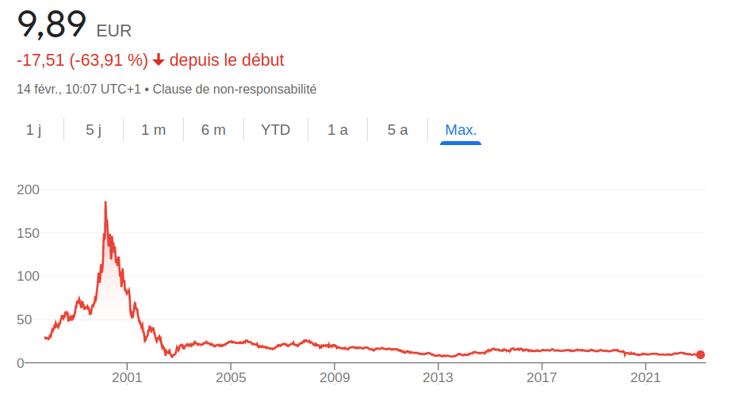

Cas d'une crise
Sur le long terme, le cours d'une action suit les bénéfices de l'entreprise. Mais à court terme, il dépend aussi de la confiance et de l'enthousiasme des investisseurs. Tant que cet enthousiasme reste modéré, ce n'est pas un problème ; mais il arrive que les cours montent beaucoup plus vite que les bénéfices des entreprises.
On est alors dans une bulle : les actions coûtent beaucoup plus cher que ce qu'elles valent réellement. Tôt ou tard, la bulle éclate, ce qui provoque un krach boursier. Mais les baisses de marché sont fréquentes, même sans bulle. Selon Capital Group (S&P 500, de 1954 à 2024), on observe en moyenne :
- une baisse d'au moins 5 % : environ deux fois par an ;
- une baisse d'au moins 10 % (une « correction ») : environ tous les 18 mois ;
- une baisse d'au moins 20 % (un marché « baissier ») : environ tous les 6 ans.
Ce ne sont que des moyennes. Un krach vient en général soit d'un événement extérieur (pandémie, guerre, crise financière…), soit d'un écart devenu trop grand entre le prix des actions et leur valeur réelle. Beaucoup d'investisseurs se mettent alors à vendre, ce qui fait baisser les cours ; d'autres, pris de panique, vendent à leur tour, ce qui accentue encore la baisse : c'est la spirale du krach.
Que faire en cas de crise ?…
Cela paraît contre-intuitif, mais pour beaucoup d'investisseurs (ceux qui ne cèdent pas à la panique, en tout cas), une crise est l'une des meilleures choses qui puissent leur arriver financièrement. Beaucoup cèdent à la panique parce que leurs placements ont perdu beaucoup de valeur. Voici les points à garder en tête.
Les marchés se relèvent…
L'expérience montre que les marchés finissent par se relever. Contrairement aux entreprises, qui peuvent faire faillite pendant une crise, il est très peu probable qu'un marché large soit touché durablement. Rappelons que tant qu'on n'a pas vendu, on n'a réalisé ni gain ni perte. Selon le secteur, le cours mettra plus ou moins de temps à remonter, mais il finira par le faire. Pour s'en convaincre, il suffit de regarder la courbe du MSCI World sur plusieurs décennies : le marché a les reins solides. Investir en bourse demande des nerfs et de la patience : si l'on n'est pas prêt à voir ses placements chuter fortement sans paniquer, alors on n'est peut-être pas prêt à investir.
Les crises ont leurs bénéfices…
En plus de révéler à chacun son vrai profil d'investisseur, une crise est en général une occasion. On a répété qu'il ne fallait pas jouer les experts en essayant de prédire les cours, et qu'on s'appuyait uniquement sur le fait que les marchés montent sur le long terme. Les crises sont une exception. Les meilleures journées de bourse suivent souvent de près les pires : selon J.P. Morgan, sur les 20 dernières années, 7 des 10 meilleures journées du S&P 500 sont survenues moins de deux semaines après l'une des 10 pires. Prenons l'exemple de la crise du Covid : ce n'était pas l'éclatement d'une bulle, mais les cours ont chuté brutalement en mars 2020, puis n'ont mis que quelques mois à retrouver leur niveau d'avant. Cette baisse était donc une occasion ! L'ETF MSCI World d'Amundi (CW8) est par exemple descendu à environ 235 € en mars 2020, contre environ 400 € trois ans plus tard.
Le constat est simple : quand on investit (et qu'on ne spécule pas), il y a deux phases dans sa vie d'épargnant. La phase d'achat, au début et tout au long de sa vie, puis la phase de revente, à la fin. Si l'on compte acheter des burgers toute sa vie sans en produire, on a tout intérêt à les payer moins cher. Il en va de même pour les actions : peu importe que celles qu'on possède déjà perdent de la valeur, puisqu'on ne les vendra pas avant 10 ou 20 ans. Il peut être intelligent de garder des liquidités pour investir davantage pendant une crise et profiter de la situation. Attention cependant au point suivant.
Les marchés se relèvent, pas forcément les entreprises…
Les crises sont le seul moment où l'on regarde le cours pour prendre une décision ; le reste du temps, on ne regarde pas. Prenons l'exemple des entreprises qui ont connu des hausses spectaculaires pendant le Covid (Netflix, Amazon, Zoom…). Quelqu'un qui avait peur de « rater » quelque chose a pu être tenté d'y investir en masse ; ces actions ont ensuite chuté tout aussi spectaculairement avec le retour à la normale, et beaucoup ont acheté au plus haut. Certaines s'en sont remises, d'autres, comme Zoom, sont restées très loin de leur record. Quelqu'un qui n'avait pas investi pourrait se demander s'il est pertinent « d'acheter » ces baisses en pariant sur une remontée. Or rien ne garantit qu'une entreprise retrouve son cours passé. Les marchés, eux, se relèvent, car un indice représente toute une économie ou tout un secteur : si une entreprise coule, une autre la remplace dans l'indice, et les ETF font ce renouvellement automatiquement. Certaines entreprises, elles, ne se relèvent jamais. Voici par exemple le cours de l'action Orange (ex-France Télécom) depuis l'éclatement de la bulle internet :

Quelqu'un qui a investi au plus haut a donc très peu de chances de retrouver un jour sa mise. C'est une raison typique de préférer les ETF aux actions individuelles.
Ne pas céder à la panique et lisser ses achats…
Un exemple célèbre montre qu'un marché peut rester très longtemps sous son plus haut : le Japon. Après l'éclatement de la bulle japonaise, l'indice Nikkei 225 a mis 34 ans à retrouver son record de décembre 1989 : il ne l'a dépassé qu'en février 2024. Cela ne veut pas dire que la bourse est une mauvaise option.
D'une part, le Japon est un cas extrême, dû à une bulle spectaculaire et à des facteurs très spécifiques. Néanmoins, si c'est arrivé, c'est que c'est possible. D'autre part, cela signifie seulement que quelqu'un qui aurait tout investi d'un coup au sommet, fin 1989, aurait attendu plus de 30 ans pour retrouver sa mise (un peu moins en tenant compte des dividendes).
Tout miser d'un coup, au plus haut et sur un seul pays, est évidemment la pire stratégie. En plus de savoir dans quoi investir, il faut savoir comment investir. Pour les particuliers, la méthode la plus simple est l'investissement programmé, ou DCA (Dollar Cost Averaging) : investir régulièrement, par exemple chaque mois, une partie de ses revenus, quoi qu'il arrive. Le marché monte, stagne ou baisse ? On achète. On achète ainsi les hausses comme les baisses, sans essayer de jouer au plus malin. D'une part, on panique moins en cas de crise, car on n'a pas tout investi au sommet ; d'autre part, on profite des baisses pour acheter moins cher, et l'on retrouve sa mise beaucoup plus vite.
Reprenons le Japon : d'une part, il ne faut pas miser de grosses sommes sur un seul pays (les ETF concentrés peuvent rapporter plus, mais ils sont plus risqués, comme on l'a vu dans le choix des ETF) ; d'autre part, quelqu'un qui aurait investi régulièrement dans le Nikkei pendant toutes ces années aurait récupéré sa mise et fait des bénéfices bien avant 2024.
Quand on dispose déjà d'une grosse somme (un héritage, par exemple), l'étaler sur plusieurs mois n'est pas forcément plus rentable : comme les marchés montent plus souvent qu'ils ne baissent, investir tout d'un coup a fait mieux qu'un investissement étalé dans environ deux cas sur trois, selon une étude de Vanguard (2023, sur le MSCI World depuis 1976). L'investissement étalé limite en revanche le risque de regret si une baisse survient juste après. Pour l'épargne mensuelle, la question ne se pose pas : investir au fur et à mesure qu'on épargne, c'est précisément du DCA.
Certains critiquent le DCA comme une méthode de débutant : même s'il est efficace, il ne serait pas optimal, et l'on pourrait facilement faire mieux. Mais toute autre stratégie consiste à deviner le bon moment pour investir : si l'on se trompe, c'est à ses risques et périls.
Conclusion…
Pour faire face aux crises et se protéger, il faut investir régulièrement (DCA), se préparer psychologiquement aux baisses et, si possible, garder des liquidités pour investir davantage dans ces moments-là, sans jamais s'endetter ni toucher à ses réserves de précaution. Il ne faut pas acheter les chutes d'entreprises individuelles, qui peuvent ne jamais se relever. Pendant la phase d'achat de la vie d'un investisseur, une crise n'est pas un drame : c'est au contraire une occasion de s'enrichir.